VOCALOID QUIZ
Ever wondered what VOCALOID you would be? No? Find out anyway by taking this quiz! (Disclaimer: Not all VOCALOIDS are available. Maybe one day...)
QUESTION 1
Let's start with a simple question! How are you doing?
I'm doing great!
Alright, I think.
It could be better...
Bad. I'm doing bad.
QUESTION 2
Good for you! Or sorry that happened. Anyway, another basic question! Which of these colors do you like the most?
Blue
Green
Purple
Red
Orange
Yellow
Pink
Black
White
Brown
QUESTION 3
Which of these genres of music do you prefer?
Pop
Rock
Metal
Electronic
Folk
Hip-hop
Classical
Jazz
I listen to a bit of everything!
QUESTION 4
Choose a Hatsune Miku Nendoroid!
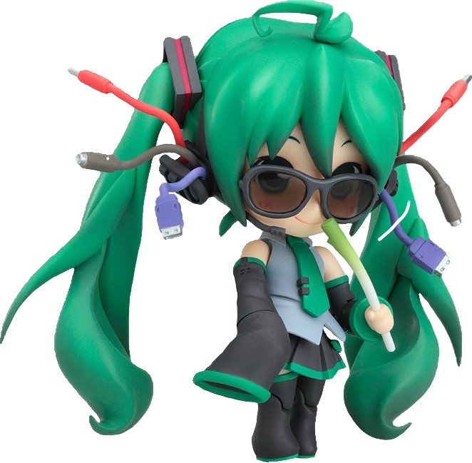
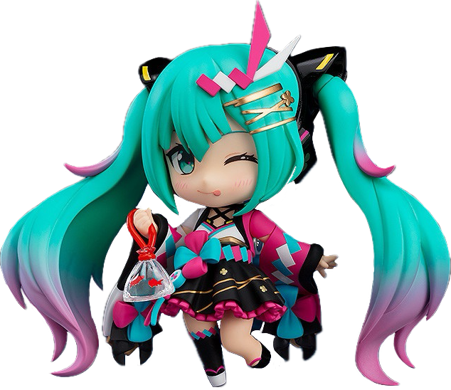
QUESTION 5
Time for some syudou propaganda! Pick the song you like the most! Links have been added for your listening pleasure.
Bitter Choco Decoration
@YouTube
Call Boy
@YouTube
Amazing Happy Halloween Night
@YouTube
Her Boyfriend, Jude
@YouTube
Days by Days
@YouTube
Annoyance
@YouTube
QUESTION 6
What do you like to do in your free time?
Sleep
Read
Play video games
Watch shows/videos/movies
Go out
Use my computer
None of these apply to me
QUESTION 7
Which of these positive personality traits would you say best applies to you?
Friendly
Energetic
Kind
Calm
Funny
I have no redeeming qualities
QUESTION 8
What - Ahhhhh! Hatsune Miku suddenly pulls out a gun and points it at you!
What the hell Miku, I thought we were friends!
I knew I shouldn't have trusted you, Miku. Not after what happened last time.
It's too late, Miku! I've already planted the bombs!
Just shoot me, Miku. I've had enough.
Put the gun down, Miku. We can talk this out.
*Pulls out my own gun*
QUESTION 9
Phew, she put it away. Moving on... What Project Voltage illustration did you like the most?
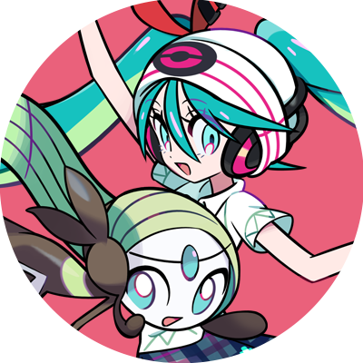
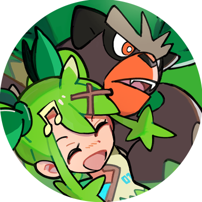
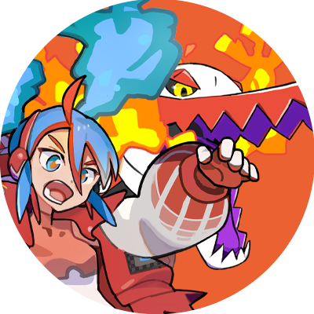
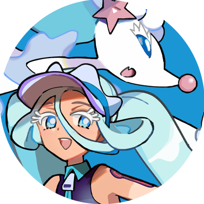
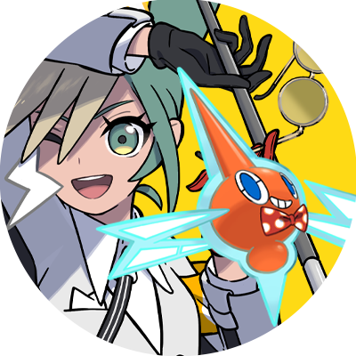
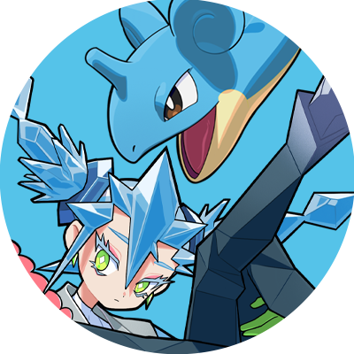
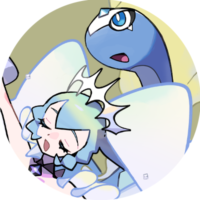
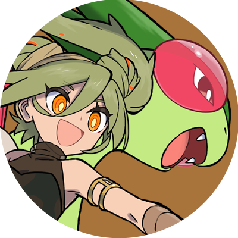
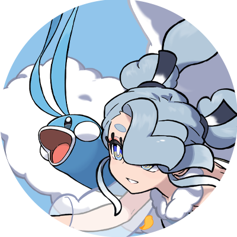
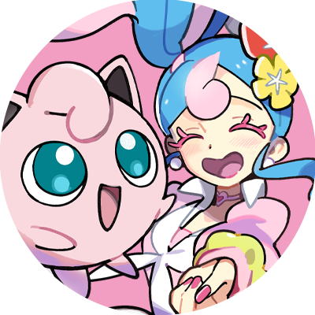
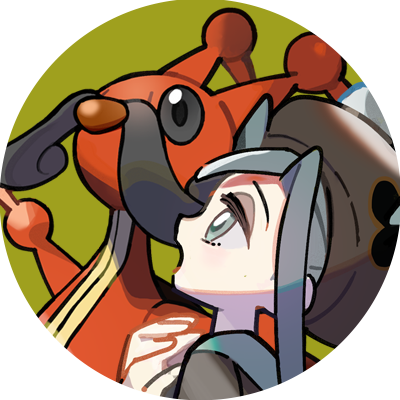
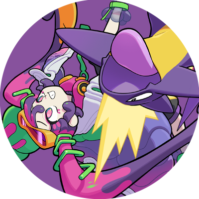
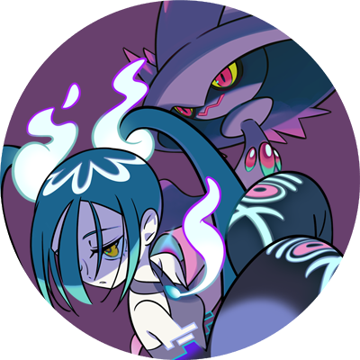
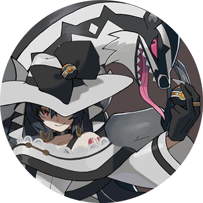
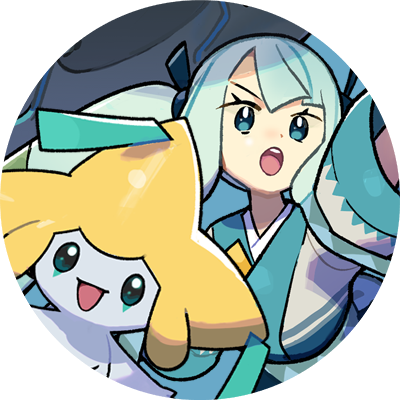
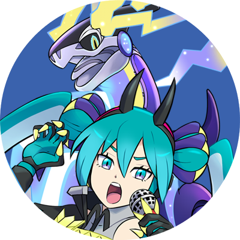
QUESTION 10
The final question! Thanks for making it this far! This is a free question!
Which VOCALOID do you hope you'll get?
Hatsune Miku
Kagamine Rin
Kagamine Len
Megurine Luka
MEIKO
KAITO
Kasane Teto
Kamui Gakupo
IA
GUMI
It doesn't matter to me!
Submit
Source code:
peachie.nu
(archived)